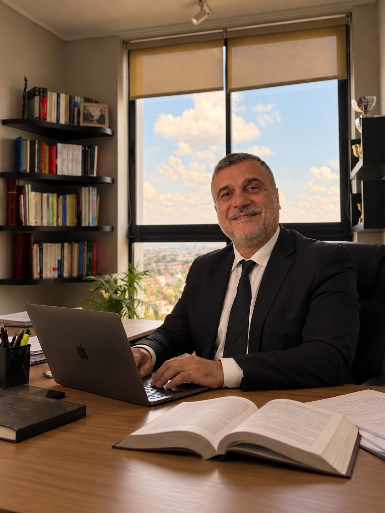

Claridad para decidir. Estrategia para resolver.
Asesoramiento jurídico claro, directo y transparente, sin tecnicismos innecesarios.
Servicios jurídicos
Áreas de práctica
Atención metódica y representación en diversas ramas del derecho público y privado.
-
Derecho Civil y Comercial
Asesoramiento en redacción y revisión contractual, cumplimiento de obligaciones, ejecuciones y responsabilidad por daños.
-
Derecho Penal
Representación técnica e intervención defensiva o de querella en causas penales en diversas instancias procesales.
-
Derecho de Familia y Sucesiones
Orientación en procesos sucesorios, convenios sobre alimentos o cuidado personal, y gestión de conflictos patrimoniales familiares.
-
Asesoramiento Corporativo
Asistencia legal preventiva a comerciantes y PyMEs. Estructuración jurídica de contratos e instrumentos comerciales.
-
Derecho Laboral
Evaluación de vínculos laborales, intercambio telegráfico, análisis de indemnizaciones y representación en instancias de conciliación o juicio.
Imágenes de nuestra oficina: un espacio pensado para recibirte y conversar sobre tu caso con tranquilidad.
¿Tu caso es otro? Escribinos →

Sobre mí
Asesoramiento legal claro y personal
Sé que detrás de cada consulta hay una situación importante. Por eso, me tomo el tiempo de escuchar tu caso, explicarte tus opciones con claridad y acompañarte en cada etapa.
Vas a saber qué pasos se pueden dar, qué aspectos conviene tener en cuenta y cuáles son los próximos movimientos. Mi compromiso es brindarte una atención directa, responsable y transparente.
20
años de trayectoria
en el ejercicio de la abogacía
Doctorando en Ciencias Jurídicas Universidad Nacional de La Matanza (UNLaM)
- Atención directa, sin intermediarios.
- Explicaciones claras para que puedas decidir con información.
- Seguimiento de tu caso en cada etapa.
Cómo trabajo
Un proceso simple, paso a paso
Desde el primer mensaje vas a saber qué sigue y qué podés esperar.
-
Me contás tu situación
Escribime por WhatsApp o llamame. Te escucho y te hago las preguntas necesarias para entender qué pasó.
-
Analizo tu caso
Reviso la documentación que tengas y evalúo qué posibilidades hay, qué riesgos existen y qué conviene hacer.
-
Definimos el camino
Te cuento las opciones que tenés, con palabras simples, y juntos elegimos la mejor forma de avanzar.
Dudas habituales
Preguntas frecuentes
Las consultas que más me hacen antes de empezar.
No hace falta que tengas todos los papeles ordenados para la primera consulta. En ese primer contacto reviso la información que ya tenés y te cuento qué documentación podría hacer falta.
Podés tener una consulta presencial con cita previa o coordinar una llamada o una conversación por WhatsApp. Elegí la modalidad que te resulte más cómoda.
Antes de avanzar, te explico cuáles son los honorarios y los gastos previstos, y cómo podés abonarlos.
Los tiempos dependen del tipo de caso, del juzgado y de si las partes llegan a un acuerdo. Cuando conozca tu situación, te doy un estimado y te explico qué puede influir en los plazos.
Sí. Todo lo que me cuentes está protegido por el secreto profesional.
Contacto
¿Necesitás hacer una consulta?
Escribime por WhatsApp o llamame. Te escucho, vemos tu situación y te cuento cómo seguir.
Además de mi oficina, cuento con una sala de reuniones para atenderte de forma presencial.
Cómo llegar
Reconocé el edificio
Algunas imágenes para que ubiques el estudio cuando vengas a tu cita.
- Teléfono
- Atención
- Presencial con cita previa
- Horarios
- Perfil de Mario Luquis →